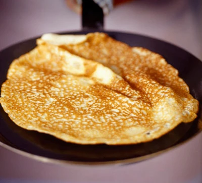
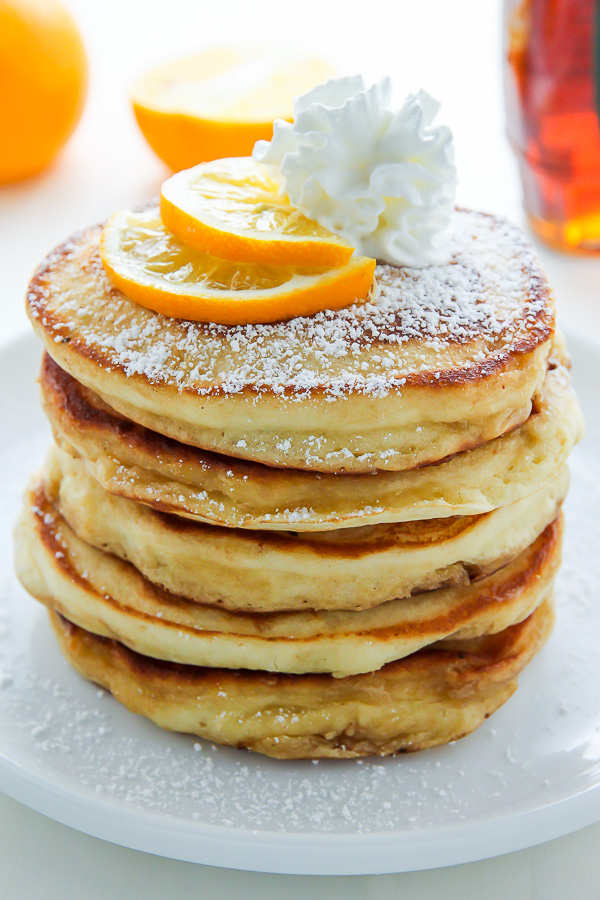
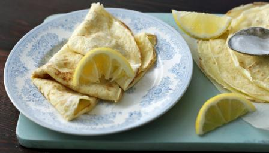

Below is a simple recipe for making pancakes
Making pancakes is easy, takes not long to make and they are delicious. You can eat them with your favourite supplements be it sugar and lemon or nutella, I'm not judging 😄
Also, don't forget to check out at the last part of this article a list of links of another five ways of making pancakes.
What are the ingredients that we are going to use:
- 100 g of plain four
- 2 large eggs
- 300 ml of milk
- A pinch of salt
- 1 tablespoon of sunflower or vegetable oil
- lemon wedges to serve (as prefered)
- granulated sugar to serve (as prefered)
Now the steps you need to take to complete the recipe and enjoy your pancakes
- Put 100g of plain flour, 300ml of milk, 2 large eggs, 1 tablespoon of sunflower and a pinch of salt into a large bowl and whisk it to a smooth batter.🥣
- Either wait for 30 minutes for it to rest or you can start cooking right away if you dont have time.😉
- Set a medium frying pan or a crepe pan over a medium heat and carefully wipe it out with some oiled kitchen paper.🍳
- When hot, cook your pancakes for 1 min each side until golden, keeping them warm in a low oven as you go.🍪
- Serve with lemon wedges and granulated sugar, or your favourite filling😋
Here's what the final result looks like



Here is a list of recipes for making pancakes around the world (around the web that is)